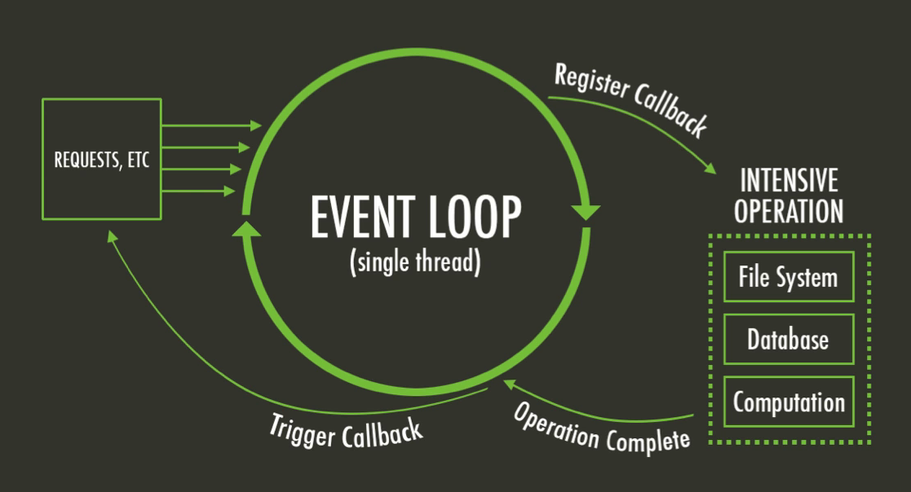
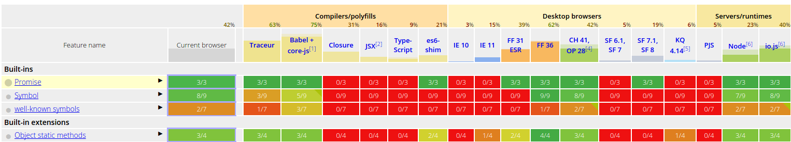

JavaScript est un langage qui utilise un système de concurrence basé sur la boucle d’événement (event loop).
Boucle d’événement ?
Le principe est d’avoir une boucle s’exécutant indéfiniment et où il est possible d’enregistrer des fonctions pour certains événements (timeout, click, retour d’une réponse ajax, accès à un fichier, etc). Lorsque l’événement se produit, la fonction est exécutée au prochain tour de boucle.
L’avantage principal est le fait que les entrées/sorties sont non bloquantes.

Si vous souhaitez en savoir plus sur la boucle d’événement, je vous recommande vivement cette présentation de Philip Roberts « What the heck is the event loop anyway? » présentée lors de la JSConf EU 2014 ou alors cette page sur la gestion de la concurrence et boucle des événements sur MDN.
Code asynchrone
Via ce mode de conception avec la boucle d’évémenent, les appels de fonctions asynchrones sont monnaie courante en JavaScript.
Que cela soit côté client (setTimeout, XMLHttpRequest, Geolocation.getCurrentPosition(),...) ou serveur (par exemple avec les API FileSystem de node), il est donc souvent nécessaire de passer une ou deux fonctions en paramètre d’un appel, que l'on baptise généralement les callbacks de succès et d'erreur.
Lorsque de nombreuses fonctions asynchrones s’enchaînent (comme par exemple plusieurs appels Ajax), on aboutit rapidement à ce qu’on appelle la “pyramide de l’enfer” (ou “Pyramid of Doom”) :
action1(function (v1) {
action2(v1, function(v2) {
action3(v2, function(v3) {
action4(v3, function(v4) {
// Traitement de v4
});
});
});
});
On se rend bien compte que maintenir un tel code est relativement pénible (imaginez ajouter ou supprimer une action).
Sur le site mappy.com, nous utilisons très régulièrement des enchainements d'appels asynchrones. Un des cas les plus parlants est le calcul d'itinéraire : nous géolocalisons les adresses de départ et d'arrivée, puis nous calculons l'itinéraire avant de l'afficher à l'utilisateur. Ce qui pouvait donner :
var addresses = [];
geocode('Paris', function(result) {
addresses.push(result);
geocode('Lyon', function(result) {
addresses.push(result);
computeItinerary(addresses, function(itinerary) {
displayItinerary(itinerary);
}, errorCallback);
}, errorCallback);
}, errorCallback);
C’est là qu’interviennent les promesses, qui sont une des façons de “remettre à plat” cette pyramide.
Les promesses
Le terme promise a été proposé par Daniel Friedman et David Wise en 1976 à travers la conférence « The Impact of Applicative Programming on Multiprocessing » à l’International Conference on Parallel Processing. Les promesses sont à rapprocher des futurs (futures) ou délais (delays) que l’on retrouve notamment en Dart, en Python, en Java (java.util.concurrent.Future), en Scala, etc.
Avec les promesses, le code présenté en introduction pourrait s’écrire de la sorte :
action1()
.then(action2)
.then(action3)
.then(action4)
.then(function(v4) {
// Traintement de v4
});
et le code simplifié du calcul d’itinéraire pourrait s’écrire ainsi :
var addresses = [];
geocode('Paris')
.then(function(result) {
addresses.push(result);
})
.then(function() {
return geocode('Lyon'))
})
.then(function(result) {
addresses.push(result);
})
.then(function() {
return computeItinerary(addresses);
})
.then(displayItinerary)
.fail(errorCallback);
Une première approche avec Q
Sur le site Mappy, les appels asynchrones ont étés migrés vers des promesses en avril 2013 en utilisant la librairie Q.
Parmi les multiples alternatives, nous nous sommes intéressés aux Deferred de jQuery, notamment car elles étaient déjà incluses sur le site.
Néanmoins, Q a été choisie par rapport aux Deferred de jQuery principalement pour sa gestion des exceptions plus fine (plus de détails sur le site de Q).
Par ailleurs, les Deferred de jQuery ne sont pas compatibles avec la spécification Promise/A+, donc sujets à plus de travail en cas de changement de librairie (voici la liste de librairie et leur compatibilité face à la spécification).
Si l’on reprend l’exemple simplifié du calcul d’itinéraire précédent, le code s’écrira de la sorte via Q :
Q.all([
geocode('Paris'),
geocode('Lyon')
])
.then(computeItinerary)
.then(displayItinerary)
.fail(errorCallback);
Le fail s’applique à n’importe quelle erreur ayant lieu au sein des fonctions précédemment appelées.
Voici l’implémentation d’une fonction, par exemple geocode :
var geocode = function (address) {
var deferred = Q.defer();
// Lancement d’une requête Ajax, etc
setTimeout(function() {
deferred.resolve({ coordinates: [ 48.856898, 2.350843 ] });
// et, en cas d’erreur :
// deferred.reject('erreur');
}, 250);
return deferred.promise;
};
Les méthodes geocode, computeItinerary et displayItinerary renvoient l’attribut promise d’un objet deferred renvoyé via un appel à Q.defer() (aucun rapport avec la librairie de jQuery). En cas de succès, la méthode resolve de l’objet deferred sera invoqué et la méthode reject en cas d’erreur.
En plus d’être plus lisible, ce code est également optimisé puisque les 2 requêtes de géocodage sont lancées en parallèles via Q.all.
La fonction computeItinerary consomme les résultats des 2 autres promesses précédentes et retourne une valeur, consommé par la méthode displayItinerary.
Maintenant : les promesses natives
Les promesses ont fait leur bonhomme de chemin dans les spécifications d’ECMAScript puisqu’elles font maintenant partie de la version 6 de la norme (ES6). Cette version commence par ailleurs a être supportée par les principaux navigateurs du marché avec Firefox 31+, Chrome 41+, Opera 28+, Safari 7.1+ et iOS 8 :

Table de compatibilité d’ECMAScript 6
Pour ces raisons, il nous a semblé intéressant de délaisser la librairie Q au profit des promesses ES6 natives. Bien sûr, nous utilisons un polyfill (es6-promise) pour les navigateurs incompatibles, Internet Explorer en tête. Ce polyfill est un sous-ensemble de rsvp.js, une implémentation plus complète.
Voici comment on déclarerait la fonction geocode avec une promesse native :
var geocode = function (address) {
var promise = new Promise(function (resolve, reject) {
// Lancement d’une requête Ajax, etc
setTimeout(function() {
resolve({ coordinates: [ 48.856898, 2.350843 ] });
// et, en cas d’erreur :
// reject('erreur');
}, 250);
});
return promise;
};
L’intérêt est de retourner immédiatement la promesse. On utilisera la méthode ci-dessus ainsi :
geocode()
.then(function (result) {
}).catch (function (error) {
});
Le catch est un mot réservé et pose problème sous Internet Explorer, aussi, on préférera cette seconde syntaxe :
geocode()
.then(function (result) {
}).then(undefined, function (error) {
});
Vous trouverez des exemples plus concret avec un appel Ajax à travers 2 JsFiddle, le premier avec l’utilisation du catch, le second avec la deuxième forme.
Il est également possible de lancer plusieurs promesses en parallèle (requete1 et requete2 dans cet exemple) via cette syntaxe :
var promise = Promise.all([
requete1,
requete2
]).then(function () {
// Une fois les 2 promesses requete1 et requete2 résolues...
});
Nous avons donc, avec notre exemple d'itinéraire habituel :
Promise.all([
geocode('Paris'),
geocode('Lyon')
])
.then(computeItinerary)
.then(displayItinerary)
.then(undefined, errorCallback);
Et demain ?
Les promesses natives avec un polyfill sont sans doute une des approches les plus efficaces pour la gestion de l'asynchrone.
Cela pourrait néanmoins changer puisqu’une proposition pour ECMAScript 7 (ou ES7) introduit le mot clé await permettant de résoudre des fonctions asynchrones en les écrivant de façon synchrone :
async function itinerary() {
let paris = await geocode('Paris');
let lyon = await geocode('Lyon');
let itinerary = await computeItinerary([paris, lyon]);
displayItinerary(itinerary);
}
Notez le mot clé async en début de fonction, pour signaler que la méthode utilise un await.
Si vous êtes téméraire, le bout de code ci-dessus est déjà utilisable dans votre code source via l’utilisation d’un transpileur comme Babel (programme transformant un code ES6 ou ES7 en code ES5, bien plus supporté parmi les navigateurs actuels).
D’ailleurs, si vous souhaitez tenter l’expérience, cet article (en anglais), sur le blog de pouchdb, en parle plus en détails.